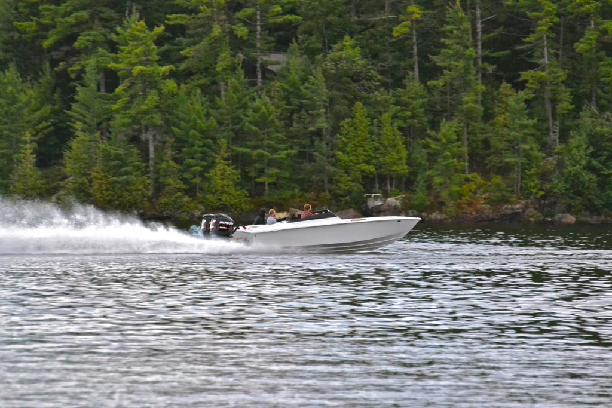

A Little More About Me
Hi there, my name is Kevin Bailey. I have two small children aged 7 and 3. Both my children are boys, the oldest is Carson, and the youngest is Linkin. Before studying to become a computer programmer I was a licensed electrician, I worked primarily for the Toronto Union (Union 353). I like to spend as much time as possible at the cottage. The cottage is an island cottage on Georgian Bay in the Parry Sound area. I have been going to the cottage since I was about 3 months old.
A List of My Favourite Things
- Boating
- Going to the Cottage
- Working Out
- Playing Hockey
- Fishing